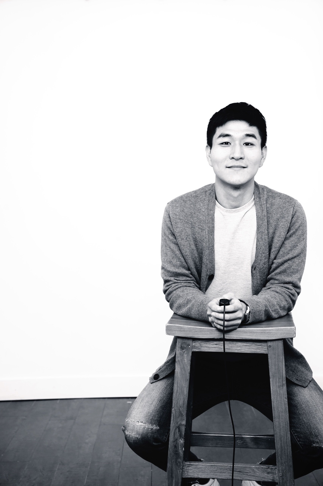

어릴 때부터 컴퓨터를 좋아했습니다. 포토샵을 독학으로 익히고, 축구 팬심으로 직접 웹사이트를 만들었던 소년이 지금의 커리어를 만들었습니다.
경영학을 전공한 뒤 글로벌 기업의 제품 마케터로 첫발을 내디뎠고, 수십 개국을 오가며 세상을 다양한 관점으로 바라보는 눈을 키웠습니다. 그러나 기술에 대한 갈증은 계속됐고, 결국 캐나다로 건너가 디자인과 개발을 처음부터 다시 배웠습니다.
지금의 저는 세 가지 시각을 함께 가진 사람입니다. 시장 관점에서 문제를 정의하는 마케터의 안목, 사용자 관점에서 경험을 설계하는 디자이너의 감각, 그리고 기술 관점에서 실행과 개선을 책임지는 엔지니어의 깊이. 이 세 가지가 제가 제품을 바라보는 방식입니다.
저는 조용하지만 활동적인 사람입니다. 마라톤, 축구, 골프를 즐기고, 가족과 캠핑과 여행을 통해 재충전합니다.
